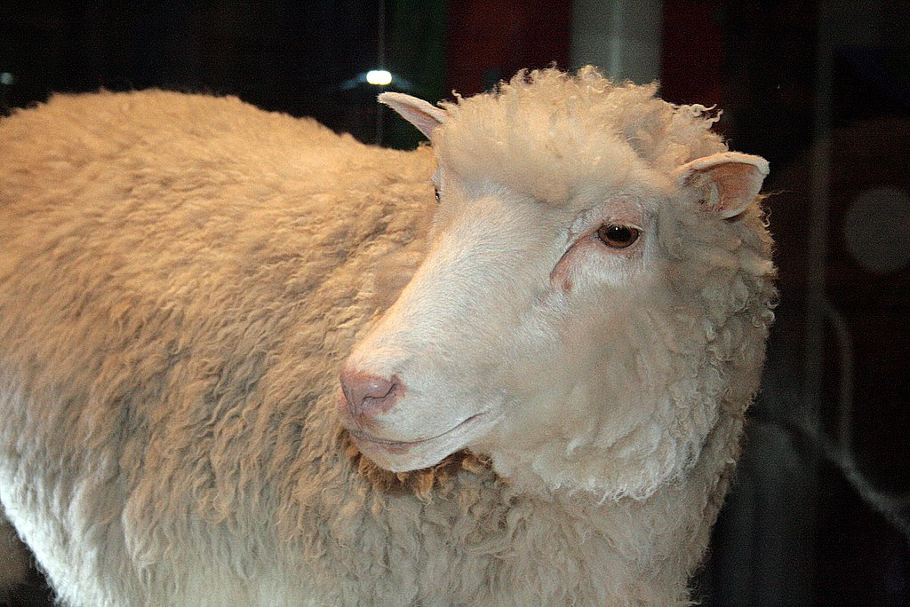

A ovelha Dolly foi o primeiro mamífero clonado a partir de uma célula adulta
VERDADE-A ovelha Dolly foi o primeiro mamífero clonado com sucesso a partir de uma célula somática adulta. Ela nasceu em 1996, no Instituto Roslin, na Escócia. Esse experimento foi um marco na ciência porque mostrou que era possível “reprogramar” uma célula adulta para criar um novo organismo. Dolly viveu até 2003.